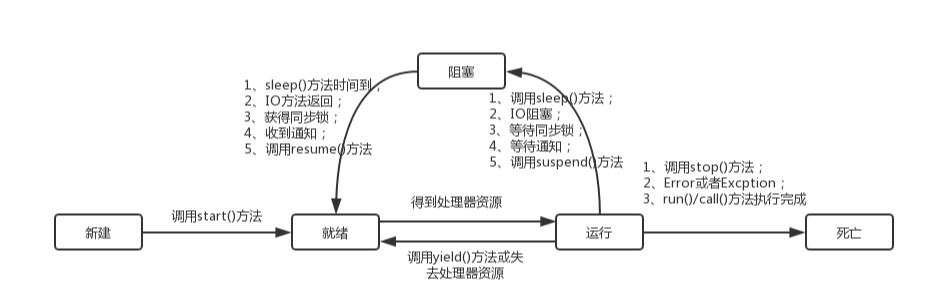
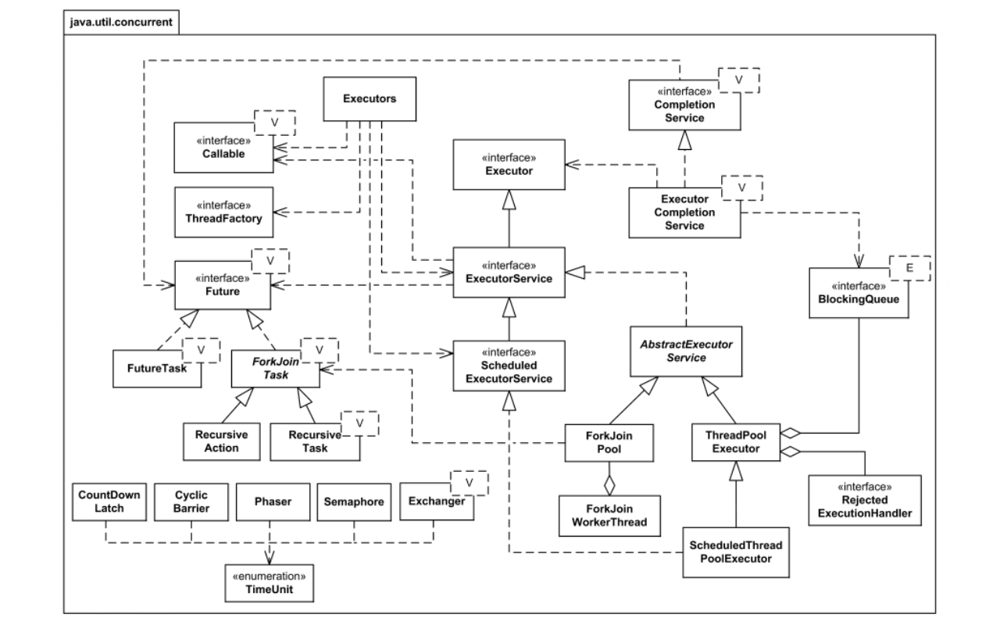

线程对象是可以产生线程的对象。比如在 Java 平台中 Thread 对象 、Runnable 对象。线程，是指正在执行的一个指点令序列。在 Java 平台上是指从一个线程对象的 start() 方法开始，运行 run() 方法体中的那一段相对独立的过程。相比于多进程，多线程的优势有：
- 进程之间不能共享数据，线程可以；
- 系统创建进程需要为该进程重新分配系统资源，故创建线程代价比较小；
- Java 语言内置了多线程功能支持，简化了 Java 多线程编程。
创建线程和启动
继承 Thread 类创建线程类
通过继承 Thread 类创建线程类的具体步骤和具体代码如下：
- 定义一个继承 Thread 类的子类，并重写该类的 run() 方法。
- 创建 Thread 子类的实例，即创建了线程对象。
- 调用该线程对象的 start() 方法启动线程。
1 | class SomeThead extends Thraad { |
实现 Runnable 接口创建线程类
通过实现 Runnable 接口创建线程类的具体步骤和具体代码如下：
- 定义 Runnable 接口的实现类，并重写该接口的 run() 方法。
- 创建 Runnable 实现类的实例，并以此实例作为 Thread 的 target 对象，即该 Thread 对象才是真正的线程对象。
1 | class SomeRunnable implements Runnable { |
通过 Callable 和 Future 创建线程
通过 Callable 和 Future 创建线程的具体步骤和具体代码如下：
- 创建 Callable 接口的实现类，并实现 call() 方法，该 call() 方法将作为线程执行体，并且有返回值。
- 创建 Callable 实现类的实例，使用 FutureTask 类来包装 Callable 对象，该 FutureTask 对象封装了该 Callable 对象的 call() 方法的返回值。
- 使用 FutureTask 对象作为 Thread 对象的 target 创建并启动新线程。
- 调用 FutureTask 对象的 get() 方法来获得子线程执行结束后的返回值其中，Callable 接口(也只有一个方法)定义如下：
1 | public interface Callable { |
线程的生命周期

新建状态
用 new 关键字 和 Thread 类或其子类建立一个线程对象后，该线程对象就处于新生状态。处于新生状态的线程有自己的内存空间，通过调用 start() 方法进入就绪状态（runnable）。
注意：不能对已经启动的线程再次调用 start() 方法，否则会出现 Java.lang.IllegalThreadStateException 异常。
就绪状态
处于就绪状态的线程已经具备了运行条件，但还没有分配到 CPU，处于线程就绪队列（尽管是采用队列形式，事实上，把它称为可运行池而不是可运行队列。因为 CPU 的调度不一定是按照先进先出的顺序来调度的），等待系统为其分配 CPU 。等待状态并不是执行状态，当系统选定一个等待执行的 Thread 对象后，它就会从等待执行状态进入执行状态，系统挑选的动作称之为“CPU调度”。一旦获得 CPU，线程就进入运行状态并自动调用自己的 run() 方法。
提示：如果希望子线程调用 start() 方法后立即执行，可以使用 Thread.sleep() 方式使主线程睡眠一会儿，转去执行子线程。
运行状态
处于运行状态的线程最为复杂，它可以变为阻塞状态、就绪状态和死亡状态。
处于就绪状态的线程，如果获得了 CPU 的调度，就会从就绪状态变为运行状态，执行 run() 方法中的任务。如果该线程失去了 CPU 资源，就会又从运行状态变为就绪状态。重新等待系统分配资源。也可以对在运行状态的线程调用 yield() 方法，它就会让出 CPU 资源，再次变为就绪状态。
当发生如下情况是，线程会从运行状态变为阻塞状态：
- 线程调用 sleep() 方法主动放弃所占用的系统资源。
- 线程调用一个阻塞式 IO 方法，在该方法返回之前，该线程被阻塞。
- 线程试图获得一个同步监视器，但更改同步监视器正被其他线程所持有。
- 线程在等待某个通知（notify）。
- 程序调用了线程的 suspend() 方法将线程挂起。不过该方法容易导致死锁，所以程序应该尽量避免使用该方法。
当线程的 run() 方法执行完，或者被强制性地终止，例如出现异常，或者调用了 stop() 、desyory() 方法等等，就会从运行状态转变为死亡状态。
阻塞状态
处于运行状态的线程在某些情况下，如执行了 sleep() 方法，或等待 I/O 设备等资源，将让出 CPU 并暂时停止自己的运行，进入阻塞状态。
在阻塞状态的线程不能进入就绪队列。只有当引起阻塞的原因消除时，如睡眠时间已到，或等待的 I/O 设备空闲下来，线程便转入就绪状态，重新到就绪队列中排队等待，被系统选中后从原来停止的位置开始继续运行。可以分为三种：
- 等待阻塞：运行状态中的线程执行 wait() 方法，使线程进入到等待阻塞状态。
- 同步阻塞：线程在获取 synchronized 同步锁失败（因为同步锁被其他线程占用）。
- 其他阻塞：通过调用线程的 sleep() 或 join() 发出了 I/O 请求时，线程就会进入到阻塞状态。当 sleep() 状态超时，join() 等待线程终止或超时，或者 I/O 处理完毕，线程重新转入就绪状态。
死亡状态
当线程的 run() 方法执行完，或者被强制性地终止，就认为它死去。这个线程对象也许是活的，但是，它已经不是一个单独执行的线程。线程一旦死亡，就不能复生。 如果在一个死去的线程上调用 start() 方法，会抛出 java.lang.IllegalThreadStateException 异常。
线程管理
Java 提供了一些便捷的方法用于会线程状态的控制。具体如下：
线程睡眠 —— sleep
如果我们需要让当前正在执行的线程暂停一段时间，并进入阻塞状态，则可以通过调用 Thread 的 sleep() 方法。
注意：
sleep() 是静态方法，最好不要用 Thread 的实例对象调用它，因为它睡眠的始终是当前正在运行的线程，而不是调用它的线程对象，它只对正在运行状态的线程对象有效。如下面的例子：
1
2
3
4
5
6
7
8
9
10
11
12public class Test1 {
public static void main(String[] args) throws InterruptedException {
System.out.println(Thread.currentThread().getName());
MyThread myThread=new MyThread();
myThread.start();
myThread.sleep(1000);//这里sleep的就是main线程，而非myThread线程
Thread.sleep(10);
for (int i=0;i<100;i++) {
System.out.println("main"+i);
}
}
}Java 线程调度是 Java 多线程的核心，只有良好的调度，才能充分发挥系统的性能，提高程序的执行效率。但是不管程序员怎么编写调度，只能最大限度的影响线程执行的次序，而不能做到精准控制。因为使用 sleep() 方法之后，线程是进入阻塞状态的，只有当睡眠的时间结束，才会重新进入到就绪状态，而就绪状态进入到运行状态，是由系统控制的，我们不可能精准的去干涉它，所以如果调用 Thread.sleep(1000) 使得线程睡眠 1 秒，可能结果会大于 1 秒。
线程让步 —— yield
yield() 方法 和 sleep() 方法有点相似，它也是 Thread 类提供的一个静态的方法，它也可以让当前正在执行的线程暂停，让出 CPU 资源给其他的线程。但是和 sleep() 方法不同的是，它不会进入到阻塞状态，而是进入到就绪状态。yield() 方法只是让当前线程暂停一下，重新进入就绪的线程池中，让系统的线程调度器重新调度器重新调度一次，完全可能出现这样的情况：当某个线程调用 yield() 方法之后，线程调度器又将其调度出来重新进入到运行状态执行。
实际上，当某个线程调用了 yield() 方法暂停之后，优先级与当前线程相同，或者优先级比当前线程更高的就绪状态的线程更有可能获得执行的机会，当然，只是有可能，因为我们不可能精确的干涉 CPU 调度线程。用法如下：
1 | public class Test1 { |
关于 sleep() 方法和 yield() 方的区别如下：
- sleep() 方法暂停当前线程后，会进入阻塞状态，只有当睡眠时间到了，才会转入就绪状态。而 yield() 方法调用后 ，是直接进入就绪状态，所以有可能刚进入就绪状态，又被调度到运行状态。
- sleep() 方法声明抛出了 InterruptedException ，所以调用 sleep() 方法的时候要捕获该异常，或者显示声明抛出该异常。而 yield() 方法则没有声明抛出任务异常。
- sleep() 方法比 yield() 方法有更好的可移植性，通常不要依靠 yield() 方法来控制并发线程的执行。
线程合并 —— join
线程的合并的含义就是将几个并行线程的线程合并为一个单线程执行，应用场景是当一个线程必须等待另一个线程执行完毕才能执行时，Thread 类提供了 join() 方法来完成这个功能，注意，它不是静态方法。
它有3个重载的方法：
1 | // 当前线程等该加入该线程后面，等待该线程终止。 |
设置线程的优先级
每个线程执行时都有一个优先级的属性，优先级高的线程可以获得较多的执行机会，而优先级低的线程则获得较少的执行机会。与线程休眠类似，线程的优先级仍然无法保障线程的执行次序。只不过，优先级高的线程获取 CPU 资源的概率较大，优先级低的也并非没机会执行。
每个线程默认的优先级都与创建它的父线程具有相同的优先级，在默认情况下，main 线程具有普通优先级。
Thread 类提供了 setPriority(int newPriority) 和 getPriority() 方法来设置和返回一个指定线程的优先级，其中 setPriority(int newPriority) 方法的参数是一个整数，范围是 1~·0 之间，也可以使用 Thread 类提供的三个静态常量：
1 | MAX_PRIORITY = 10 |
1 | public class Test1 { |
注意：虽然 Java 提供了 10 个优先级别，但这些优先级别需要操作系统的支持。不同的操作系统的优先级并不相同，而且也不能很好的和 Java 的 10 个优先级别对应。所以我们应该使用 MAX_PRIORITY 、 MIN_PRIORITY 和 NORM_PRIORITY 三个静态常量来设定优先级，这样才能保证程序最好的可移植性。
后台（守护）线程
守护线程使用的情况较少，但并非无用，举例来说，JVM 的垃圾回收、内存管理等线程都是守护线程。还有就是在做数据库应用时候，使用的数据库连接池，连接池本身也包含着很多后台线程，监控连接个数、超时时间、状态等等。调用线程对象的方法 setDaemon(true) ，则可以将其设置为守护线程。守护线程的用途为：
- 守护线程通常用于执行一些后台作业，例如在你的应用程序运行时播放背景音乐，在文字编辑器里做自动语法检查、自动保存等功能。
- Java 的垃圾回收也是一个守护线程。守护线的好处就是你不需要关心它的结束问题。例如你在你的应用程序运行的时候希望播放背景音乐，如果将这个播放背景音乐的线程设定为非守护线程，那么在用户请求退出的时候，不仅要退出主线程，还要通知播放背景音乐的线程退出；如果设定为守护线程则不需要了。
setDaemon 方法的详细说明：
1 | // 将该线程标记为守护线程或用户线程。当正在运行的线程都是守护线程时，Java 虚拟机退出。 |
注意：JRE 判断程序是否执行结束的标准是所有的前台执线程行完毕了，而不管后台线程的状态，因此，在使用后台线程的时候一定要注意这个问题。
正确结束线程
Thread.stop() 、Thread.suspend 、Thread.resume 、Runtime.runFinalizersOnExit 这些终止线程运行的方法已经被废弃了，使用它们是极端不安全的，想要安全有效的结束一个线程，可以使用下面的方法：
- 正常执行完 run() 方法，然后结束掉。
- 控制循环条件和判断条件的标识符来结束掉线程。
1 | class MyThread extends Thread { |
线程同步
Java 允许多线程并发控制，当多个线程同时操作一个可共享的资源变量时（如：数据的增删改查），将会导致数据不准确，相互之间产生冲突，因此加入同步锁以避免在该线程没有完成操作之前，被其他线程的调用，从而保证了该变量的唯一性和准确性。
同步方法
即用 synchronized 关键字修饰的方法。由于 Java 的每个对象都有一个内置锁，当用此关键字修饰方法时，内置锁会保护整个方法。在调用该方法前，需要获得内置锁，否则就处于阻塞状态。
1 | public synchronized void save(){} |
注意：synchronized 关键字也可以修饰静态方法，此时如果调用该静态方法，将会锁住整个类。
同步代码块
即用 synchronized 关键字修饰的语句块。被该关键字修饰的语句块会自动被加上内置锁，从而实现同步。
1 | public class Bank { |
注意：同步是一种高开销的操作，因此应该尽量减少同步的内容。通常没有必要同步整个方法，使用 synchronized 代码块同步关键代码即可。
使用特殊域变量(volatile)实现线程同步
- volatile关键字为域变量的访问提供了一种免锁机制。
- 使用volatile修饰域相当于告诉虚拟机该域可能会被其他线程更新。
- 因此每次使用该域就要重新计算，而不是使用寄存器中的值。
- volatile不会提供任何原子操作，它也不能用来修饰 final 类型的变量。
1 | public class SynchronizedThread { |
注意：多线程中的非同步问题主要出现在对域的读写上，如果让域自身避免这个问题，则就不需要修改操作该域的方法。用 final 域，有锁保护的域 和 volatile 域可以避免非同步的问题。
使用重入锁（Lock）实现线程同步
在 JavaSE 5.0 中新增了一个 java.util.concurrent 包来支持同步。ReentrantLock 类是可重入、互斥、实现了 Lock 接口的锁，它与使用 synchronized 方法和块，具有相同的基本行为和语义，并且扩展了其能力。ReenreantLock 类的常用方法有：
1 | ReentrantLock() : 创建一个 ReentrantLock 实例 |
1 | // 只给出要修改的代码，其余代码与上同 |
注意：ReentrantLock 类还有一个可以创建公平锁的构造方法，但由于能大幅度降低程序运行效率，不推荐使用。
线程通信
借助于 Object 类的 wait() 、notify() 和 notifyAll() 实现通信
线程执行 wait() 后，就放弃了运行资格，处于冻结状态；
线程运行时，内存中会建立一个线程池，冻结状态的线程都存在于线程池中，notify() 执行时唤醒的也是线程池中的线程，线程池中有多个线程时唤醒第一个被冻结的线程。
notifyall() ，唤醒线程池中所有线程。
注意：
- wait() 、notify() 、 notifyall() 都用在同步里面，因为这 3 个函数是对持有锁的线程进行操作，而只有同步才有锁，所以要使用在同步中。
- wait() 、 notify() 、 notifyall() 在使用时必须标识它们所操作的线程持有的锁，因为等待和唤醒必须是同一锁下的线程，而锁可以是任意对象，所以这 3 个方法都是 Object 类中的方法。
单个消费者生产者例子如下：
1 | // 生产者和消费者都要操作的资源 |
但是如果有多个生产者和多个消费者，上面的代码是有问题，比如 2 个生产者，2 个消费者，运行结果就可能出现生产的 1 个商品生产了一次而被消费了 2 次，或者连续生产 2 个商品而只有 1 个被消费，这是因为此时共有 4 个线程在操作 Resource 对象，而 notify() 唤醒的是线程池中第 1 个 wait() 的线程，所以生产者执行 notify() 时，唤醒的线程有可能是另 1 个生产者线程，这个生产者线程从 wait() 中醒来后不会再判断 flag ，而是直接向下运行打印出一个新的商品，这样就出现了连续生产 2 个商品。
为了避免这种情况，修改代码如下：
1 | class Resource { |
使用 Condition 控制线程通信
jdk 1.5 中，提供了多线程的升级解决方案为：
- 将同步 synchronized 替换为显式的 Lock 操作。
- 将 Object 类中的 wait()、notify()、notifyAll() 替换成了 Condition 对象，该对象可以通过 Lock 锁对象获取。
- 一个 Lock 对象上可以绑定多个 Condition 对象，这样实现了本方线程只唤醒对方线程，而 jdk 1.5 之前，一个同步只能有一个锁，不同的同步只能用锁来区分，且锁嵌套时容易死锁。
1 | class Resource { |
使用阻塞队列（BlockingQueue）控制线程通信
BlockingQueue 是一个接口，也是 Queue 的子接口。BlockingQueue 具有一个特征：当生产者线程试图向 BlockingQueue 中放入元素时，如果该队列已满，则线程被阻塞；但消费者线程试图从 BlockingQueue 中取出元素时，如果队列已空，则该线程阻塞。程序的两个线程通过交替向 BlockingQueue 中放入元素、取出元素，即可很好地控制线程的通信。
BlockingQueue 提供如下两个支持阻塞的方法：
- put(E e)：尝试把 Eu 元素放如 BlockingQueue 中，如果该队列的元素已满，则阻塞该线程。
- take（）：尝试从 BlockingQueue 的头部取出元素，如果该队列的元素已空，则阻塞该线程。
BlockingQueue 继承了 Queue 接口，当然也可以使用 Queue 接口中的方法，这些方法归纳起来可以分为如下三组：
- 在队列尾部插入元素，包括 add（E e）、offer（E e）、put（E e）方法，当该队列已满时，这三个方法分别会抛出异常、返回 false、阻塞队列。
- 在队列头部删除并返回删除的元素。包括 remove（）、poll（）、和 take（）方法，当该队列已空时，这三个方法分别会抛出异常、返回 false、阻塞队列。
- 在队列头部取出但不删除元素。包括 element（）和 peek（）方法，当队列已空时，这两个方法分别抛出异常、返回 false。
BlockingQueue 接口包含如下 5 个实现类：
1 | ArrayBlockingQueue ：基于数组实现的 BlockingQueue 队列。 |
示例：
1 | import java.util.concurrent.ArrayBlockingQueue; |
线程池
合理利用线程池能够带来三个好处：
- 降低资源消耗。通过重复利用已创建的线程降低线程创建和销毁造成的消耗。
- 提高响应速度。当任务到达时，任务可以不需要等到线程创建就能立即执行。
- 提高线程的可管理性。线程是稀缺资源，如果无限制的创建，不仅会消耗系统资源，还会降低系统的稳定性，使用线程池可以进行统一的分配，调优和监控。
使用 Executors 工厂类产生线程池
Executor 线程池框架的最大优点是把任务的提交和执行解耦。客户端将要执行的任务封装成 Task，然后提交即可。而 Task 如何执行客户端则是透明的。具体点讲，提交一个 Callable 对象给ExecutorService（如：最常用的线程池 ThreadPoolExecutor ），将得到一个 Future 对象，调用 Future 对象的 get 方法等待执行结果。线程池实现原理类结构图如下：

上图中涉及到的线程池内部实现原理的所有类，不利于我们理解线程池如何使用。我们先从客户端的角度出发，看看客户端使用线程池所涉及到的类结构图：由上图可知，ExecutorService 是 Java 中对线程池定义的一个接口，它 java.util.concurrent 包中。Java API 对 ExecutorService 接口的实现有两个，所以这两个即是Java线程池具体实现类如下：
1 | ThreadPoolExecutor |
除此之外，ExecutorService 还继承了 Executor 接口（注意区分 Executor 接口 和 Executors 工厂类），这个接口只有一个 execute() 方法，最后我们看一下整个继承树：
使用 Executors 执行多线程任务的步骤如下：
- 调用 Executors 类的静态工厂方法创建一个 ExecutorService 对象，该对象代表一个线程池。
- 创建 Runnable 实现类或 Callable 实现类的实例，作为线程执行任务。
- 调用 ExecutorService 对象的 submit() 方法来提交 Runnable 实例或 Callable 实例。
- 当不想提交任务时，调用 ExecutorService 对象的 shutdown() 方法来关闭线程池。
1. 使用 Executors 的静态工厂类创建线程池的方法如下：
（1）newFixedThreadPool() ：
作用：该方法返回一个固定线程数量的线程池，该线程池中的线程数量始终不变，即不会再创建新的线程，也不会销毁已经创建好的线程，自始自终都是那几个固定的线程在工作，所以该线程池可以控制线程的最大并发数。
栗子：假如有一个新任务提交时，线程池中如果有空闲的线程则立即使用空闲线程来处理任务，如果没有，则会把这个新任务存在一个任务队列中，一旦有线程空闲了，则按 FIFO 方式处理任务队列中的任务。
（2）newCachedThreadPool() ：
作用：该方法返回一个可以根据实际情况调整线程池中线程的数量的线程池。即该线程池中的线程数量不确定，是根据实际情况动态调整的。
栗子：假如该线程池中的所有线程都正在工作，而此时有新任务提交，那么将会创建新的线程去处理该任务，而此时假如之前有一些线程完成了任务，现在又有新任务提交，那么将不会创建新线程去处理，而是复用空闲的线程去处理新任务。那么此时有人有疑问了，那这样来说该线程池的线程岂不是会越集越多？其实并不会，因为线程池中的线程都有一个“保持活动时间”的参数，通过配置它，如果线程池中的空闲线程的空闲时间超过该“保存活动时间”则立刻停止该线程，而该线程池默认的“保持活动时间”为 60s。
（3）newSingleThreadExecutor() ：
作用：该方法返回一个只有一个线程的线程池，即每次只能执行一个线程任务，多余的任务会保存到一个任务队列中，等待这一个线程空闲，当这个线程空闲了再按 FIFO 方式顺序执行任务队列中的任务。
（4）newScheduledThreadPool() ：
作用：该方法返回一个可以控制线程池内线程定时或周期性执行某任务的线程池。
（5）newSingleThreadScheduledExecutor() ：
作用：该方法返回一个可以控制线程池内线程定时或周期性执行某任务的线程池。只不过和上面的区别是该线程池大小为 1，而上面的可以指定线程池的大小。
注意：Executors 只是一个工厂类，它所有的方法返回的都是T hreadPoolExecutor、ScheduledThreadPoolExecutor 这两个类的实例。
2. ExecutorService 有如下几个执行方法：
1 | - execute(Runnable) |
（1）execute(Runnable)：
这个方法接收一个 Runnable 实例，并且异步的执行，请看下面的实例：
1 | ExecutorService executorService = Executors.newSingleThreadExecutor(); |
（2）submit(Runnable)：
submit(Runnable) 和 execute(Runnable) 区别是前者可以返回一个 Future 对象，通过返回的 Future 对象，我们可以检查提交的任务是否执行完毕，请看下面执行的例子：
1 | Future future = executorService.submit(new Runnable() { |
注意：如果任务执行完成，future.get() 方法会返回一个 null。注意，future.get() 方法会产生阻塞。
（3）submit(Callable)：
submit(Callable) 和 submit(Runnable) 类似，也会返回一个 Future 对象，但是除此之外，submit(Callable) 接收的是一个 Callable 的实现，Callable 接口中的 call() 方法有一个返回值，可以返回任务的执行结果，而 Runnable 接口中的 run() 方法是 void 的，没有返回值。请看下面实例：
1 | Future future = executorService.submit(new Callable(){ |
注意：如果任务执行完成，future.get() 方法会返回 Callable 任务的执行结果。另外，future.get() 方法会产生阻塞。
（4）invokeAny(…)：
invokeAny(…) 方法接收的是一个 Callable 的集合，执行这个方法不会返回 Future，但是会返回所有 Callable 任务中其中一个任务的执行结果。这个方法也无法保证返回的是哪个任务的执行结果，反正是其中的某一个。请看下面实例：
1 | ExecutorService executorService = Executors.newSingleThreadExecutor(); |
大家可以尝试执行上面代码，每次执行都会返回一个结果，并且返回的结果是变化的，可能会返回“Task2”，也可是“Task1”或者其它。
（5）invokeAll(…)：
invokeAll(…) 与 invokeAny(…) 类似也是接收一个 Callable 集合，但是前者执行之后会返回一个 Future 的 List，其中对应着每个 Callable 任务执行后的 Future 对象。情况下面这个实例：
1 | ExecutorService executorService = Executors.newSingleThreadExecutor(); |
3. ExecutorService 关闭方法
当我们使用完成 ExecutorService 之后应该关闭它，否则它里面的线程会一直处于运行状态。举个例子，如果的应用程序是通过 main() 方法启动的，在这个 main() 退出之后，如果应用程序中的 ExecutorService 没有关闭，这个应用将一直运行。之所以会出现这种情况，是因为 ExecutorService 中运行的线程会阻止 JVM 关闭。
要关闭 ExecutorService 中执行的线程，我们可以调用 ExecutorService.shutdown() 方法。在调用 shutdown() 方法之后，ExecutorService 不会立即关闭，但是它不再接收新的任务，直到当前所有线程执行完成才会关闭，所有在 shutdown() 执行之前提交的任务都会被执行。
如果想立即关闭 ExecutorService，我们可以调用 ExecutorService.shutdownNow() 方法。这个动作将跳过所有正在执行的任务和被提交还没有执行的任务。但是它并不对正在执行的任务做任何保证，有可能它们都会停止，也有可能执行完成。
使用 Java 8 增强的 ForkJoinPool 产生线程池
在 Java 8 中，引入了自动并行化的概念。它能够让一部分 Java 代码自动地以并行的方式执行，前提是使用了 ForkJoinPool。
ForkJoinPool 同 ThreadPoolExecutor 一样，也实现了 Executor 和 ExecutorService 接口。它使用了一个无限队列来保存需要执行的任务，而线程的数量则是通过构造函数传入，如果没有向构造函数中传入希望的线程数量，那么当前计算机可用的 CPU 数量会被设置为线程数量作为默认值。
ForkJoinPool 主要用来使用分治法（Divide-and-Conquer Algorithm）来解决问题。典型的应用比如快速排序算法。这里的要点在于，ForkJoinPool 需要使用相对少的线程来处理大量的任务。比如要对 1000 万个数据进行排序，那么会将这个任务分割成两个 500 万的排序任务和一个针对这两组 500 万数据的合并任务。以此类推，对于 500 万的数据也会做出同样的分割处理，到最后会设置一个阈值来规定当数据规模到多少时，停止这样的分割处理。比如，当元素的数量小于 10 时，会停止分割，转而使用插入排序对它们进行排序。那么到最后，所有的任务加起来会有大概 2000000+ 个。问题的关键在于，对于一个任务而言，只有当它所有的子任务完成之后，它才能够被执行。所以当使用 ThreadPoolExecutor 时，使用分治法会存在问题，因为 ThreadPoolExecutor 中的线程无法像任务队列中再添加一个任务并且在等待该任务完成之后再继续执行。而使用 ForkJoinPool 时，就能够让其中的线程创建新的任务，并挂起当前的任务，此时线程就能够从队列中选择子任务执行。比如，我们需要统计一个 double 数组中小于 0.5 的元素的个数，那么可以使用 ForkJoinPool 进行实现如下：
1 | public class ForkJoinTest { |
以上的关键是 fork() 和 join() 方法。在 ForkJoinPool 使用的线程中，会使用一个内部队列来对需要执行的任务以及子任务进行操作来保证它们的执行顺序。
注意：使用 ThreadPoolExecutor 和 ForkJoinPool 的性能差异：
首先，使用 ForkJoinPool 能够使用数量有限的线程来完成非常多的具有父子关系的任务，比如使用4个线程来完成超过 200 万个任务。但是，使用 ThreadPoolExecutor 时，是不可能完成的，因为 ThreadPoolExecutor 中的 Thread 无法选择优先执行子任务，需要完成 200 万个具有父子关系的任务时，也需要 200 万个线程，显然这是不可行的。
ForkJoinPool 能够实现工作窃取（Work Stealing），在该线程池的每个线程中会维护一个队列来存放需要被执行的任务。当线程自身队列中的任务都执行完毕后，它会从别的线程中拿到未被执行的任务并帮助它执行。因此，提高了线程的利用率，从而提高了整体性能。
对于 ForkJoinPool，还有一个因素会影响它的性能，就是停止进行任务分割的那个阈值。比如在之前的快速排序中，当剩下的元素数量小于10的时候，就会停止子任务的创建。
结论：
当需要处理递归分治算法时，考虑使用 ForkJoinPool。
仔细设置不再进行任务划分的阈值，这个阈值对性能有影响。
Java 8 中的一些特性会使用到 ForkJoinPool 中的通用线程池。在某些场合下，需要调整该线程池的默认的线程数量。
死锁
产生死锁的四个必要条件如下。当下边的四个条件都满足时即产生死锁，即任意一个条件不满足既不会产生死锁。
死锁的四个必要条件：
- 互斥条件：资源不能被共享，只能被同一个进程使用。
- 请求与保持条件：已经得到资源的进程可以申请新的资源。
- 非剥夺条件：已经分配的资源不能从相应的进程中被强制剥夺。
- 循环等待条件：系统中若干进程组成环路，该环路中每个进程都在等待相邻进程占用的资源。
举个常见的死锁例子：进程 A 中包含资源 A，进程 B 中包含资源 B，A 的下一步需要资源 B，B 的下一步需要资源 A，所以它们就互相等待对方占有的资源释放，所以也就产生了一个循环等待死锁。
处理死锁的方法：
- 忽略该问题，也即鸵鸟算法。当发生了什么问题时，不管他，直接跳过，无视它。
- 检测死锁并恢复。
- 资源进行动态分配。
- 破除上面的四种死锁条件之一。
线程相关类
ThreadLocal
ThreadLocal 它并不是一个线程，而是一个可以在每个线程中存储数据的数据存储类，通过它可以在指定的线程中存储数据，数据存储之后，只有在指定线程中可以获取到存储的数据，对于其他线程来说则无法获取到该线程的数据。 即多个线程通过同一个 ThreadLocal 获取到的东西是不一样的，就算有的时候出现的结果是一样的（偶然性，两个线程里分别存了两份相同的东西），但他们获取的本质是不同的。使用这个工具类可以简化多线程编程时的并发访问，很简洁的隔离多线程程序的竞争资源。
对于多线程资源共享的问题，同步机制采用了“以时间换空间”的方式，而 ThreadLocal 采用了“以空间换时间”的方式。前者仅提供一份变量，让不同的线程排队访问，而后者为每一个线程都提供了一份变量，因此可以同时访问而互不影响。ThreadLocal 类提供了如下的三个 public 方法：
1 | // 创建一个线程本地变量 |
下面通过系统源码来分析出现这个结果的原因。 在 ThreadLocal 中存在着两个很重要的方法，get() 和 set() 方法，一个读取一个设置。
1 | /** |
从注释上可以看出，get() 方法会返回一个当前线程的变量值，如果数组不存在就会创建一个新的。另外，对于“当前线程”和“数组”，数组对于每个线程来说都是不同的 values.table。而 values 是通过当前线程获取到的一个 Values 对象，因此这个数组是每个线程唯一的，不能共用，而下面的几句话也更直接了，获取一个索引，再返回通过这个索引找到数组中对应的值。这也就解释了为什么多个线程通过同一个 ThreadLocal 返回的是不同的东西。
Java 中为什么要这么设置呢？
ThreadLocal 在日常开发中使用到的地方较少，但是在某些特殊的场景下，通过 ThreadLocal 可以轻松实现一些看起来很复杂的功能。一般来说，当某些数据是以线程为作用域并且不同线程具有不同的数据副本的时候，就可以考虑使用 ThreadLocal。例如在 Handler 和 Looper 中。对于 Handler 来说，它需要获取当前线程的 Looper，很显然 Looper 的作用域就是线程并且不同的线程具有不同的 Looper，这个时候通过 ThreadLocal 就可以轻松的实现 Looper 在线程中的存取。如果不采用 ThreadLocal，那么系统就必须提供一个全局的哈希表供 Handler 查找指定的 Looper，这样就比较麻烦了，还需要一个管理类。
ThreadLocal 的另一个使用场景是复杂逻辑下的对象传递，比如监听器的传递，有些时候一个线程中的任务过于复杂，就可能表现为函数调用栈比较深以及代码入口的多样性，这种情况下，我们又需要监听器能够贯穿整个线程的执行过程。这个时候就可以使用到 ThreadLocal，通过 ThreadLocal 可以让监听器作为线程内的全局对象存在，在线程内通过 get() 方法就可以获取到监听器。如果不采用的话，可以使用参数传递，但是这种方式在设计上不是特别好，当调用栈很深的时候，通过参数来传递监听器这个设计太糟糕。而另外一种方式就是使用 static 静态变量的方式，但是这种方式存在一定的局限性，拓展性并不是特别的强。比如有 10 个线程在执行，就需要提供 10 个监听器对象。
注意：ThreadLocal 和其他所有的同步机制一样，都是为了解决多线程中对于同一变量的访问冲突。值普通的同步机制中，通过对象加锁来实现多线程对同一变量的安全访问，且该变量是多线程共享的，所有需要使用这种同步机制来明确分开是在什么时候对变量进行读写，在什么时候需要锁定该对象。此种情况下，系统并没有将这个资源复制多份，而是采取安全机制来控制访问而已。 ThreadLocal 只是从另一个角度解决多线程的并发访问，即将需要并发访问的资源复制多份，每个线程拥有一份资源，每个线程都有自己的资源副本。
总结：若多个线程之间需要共享资源，以达到线程间的通信时，就使用同步机制；若仅仅需要隔离多线程之间的关系资源，则可以使用 ThreadLocal。